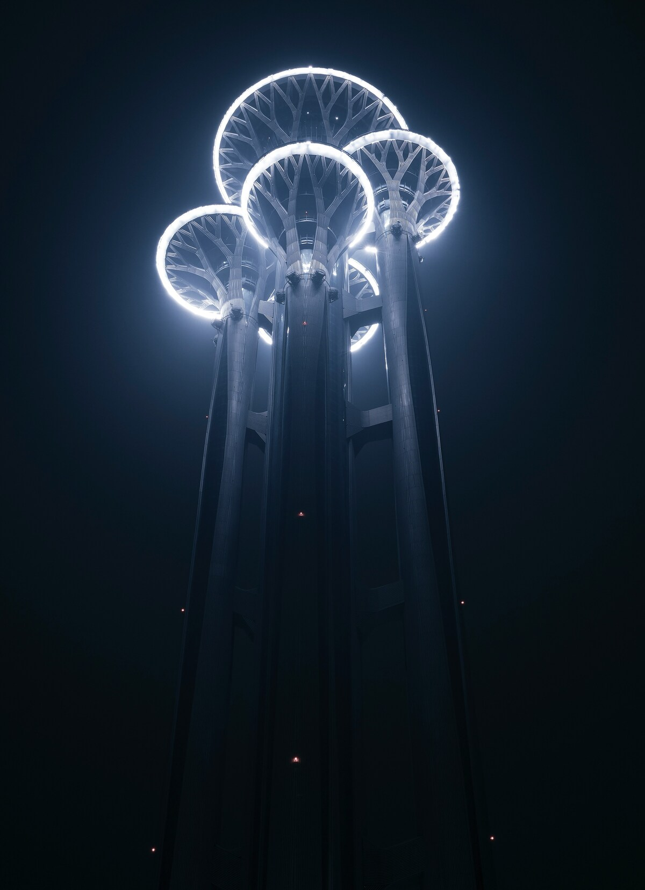
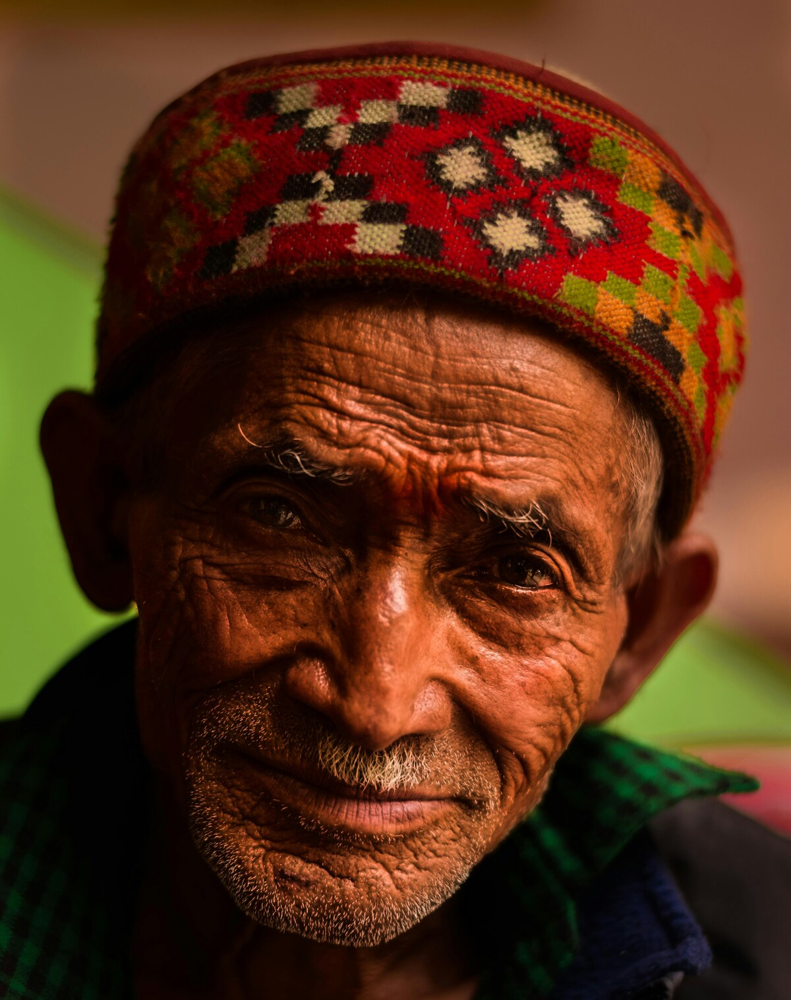
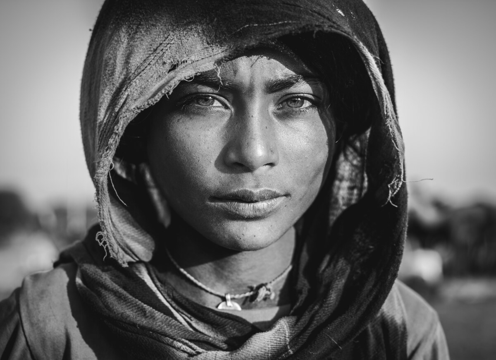
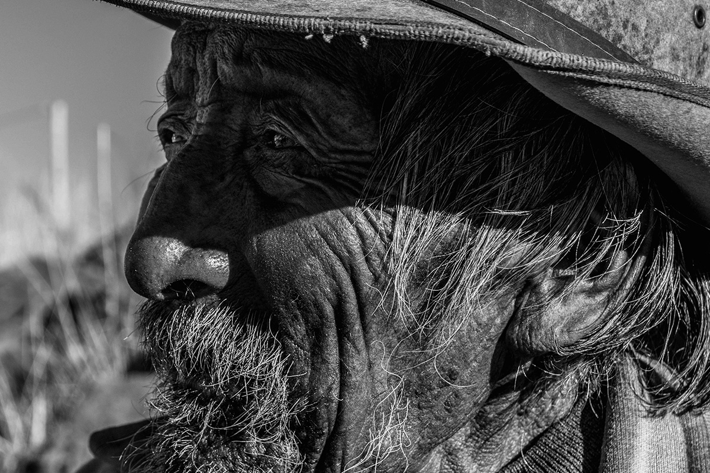

Wedding Couple Photography - Album

Skyscraper Photography - Landscape
Portrait of a Boy - Portrait
Photography Skyscraper Counterpoint- Landscape
 Photography Skyscraper Counterpoint- Landscape
Photography Skyscraper Counterpoint- Landscape
Photography Machupichu- Landscape

Photography Peruvian Man - Culture
Wedding Couple Photography - Album
Portrait of a Girl - Portrait

Photography Girl Tribu - Culture
Wedding Couple Photography - Album
Couple Photography - Album
Wedding Couple Photography - Album
Afro Model Photography - Fashion
Magazine Model Photography - Fashion
Model Photography - Fashion

Photography Old Man - Culture
Portrait B/W Girl - Portrait
Portrait B/W Girl - Portrait
Model Photography - Fashion
Boy Model Photography - Fashion
Photography Rocks- Landscape